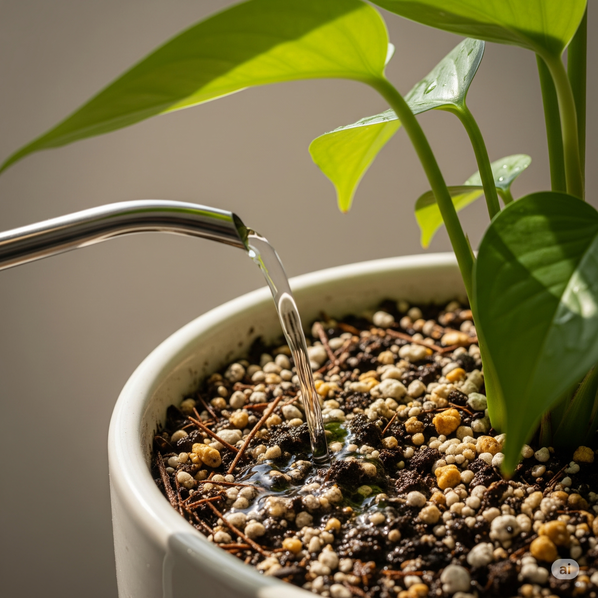

💧 Melhores Práticas de Rega para Suas Plantas: Evite Solo Endurecido e Mantenha a Saúde do Verde

A rega é um dos cuidados mais importantes — e também mais desafiadores — no cultivo de plantas. Acertar o momento e a quantidade de água evita problemas como folhas amareladas, queda prematura e até a perda da planta. Além disso, entender o comportamento do solo é essencial: um substrato compactado pode impedir que as raízes respirem e absorvam água corretamente.
1. Quando Regar: O Segredo Está no Toque
Esqueça o calendário fixo. O ideal é observar a planta e sentir o solo:
- Teste do Dedo: Insira o dedo no substrato (2-3 cm). Se estiver seco, é hora de regar; se úmido, aguarde.
- Peso do Vaso: Vasos leves indicam solo seco; pesados, solo úmido.
- Conheça Sua Planta: Tropicais gostam de solo úmido constante; suculentas preferem intervalos secos.
- Medidores de Umidade: Úteis para iniciantes e coleções grandes.
2. Como Regar Corretamente
- Rega Profunda: Molhe até a água sair pelos furos do vaso.
- Descarte o Excesso: Não deixe água acumulada no pratinho ou cachepot.
- Temperatura da Água: Prefira água em temperatura ambiente e descansada.
- Qualidade: Sempre que possível, use água filtrada ou da chuva.
3. Atenção ao Solo Compactado
Com o tempo, o substrato pode ficar socado e duro, dificultando a penetração da água e a respiração das raízes. Sinais de alerta incluem água escorrendo rapidamente pelas bordas do vaso ou plantas que parecem murchas mesmo após a rega.
- Por que acontece? Rega superficial, excesso de sais e falta de matéria orgânica aerada.
- Riscos: Raízes sufocadas, manchas nas folhas e morte gradual da planta.
- Como resolver: Afrouxe o substrato com palito, faça regas por imersão ou replante usando misturas mais leves (com perlita, casca de pinus ou fibra de coco).
4. Fatores que Influenciam a Frequência da Rega
- Tipo de Planta: Cactos x tropicais.
- Material do Vaso: Barro seca mais rápido; plástico retém mais umidade.
- Estação do Ano: Verão = regas mais frequentes; inverno = menos.
- Ambiente: Sol direto e ar seco aceleram a evaporação.
5. Erros Comuns de Rega para Evitar
- Regar Demais: Apodrecimento das raízes e fungos.
- Regar de Menos: Folhas murchas e secas.
- “Sipinhos” de Água: Rega superficial endurece o solo e não hidrata as raízes.